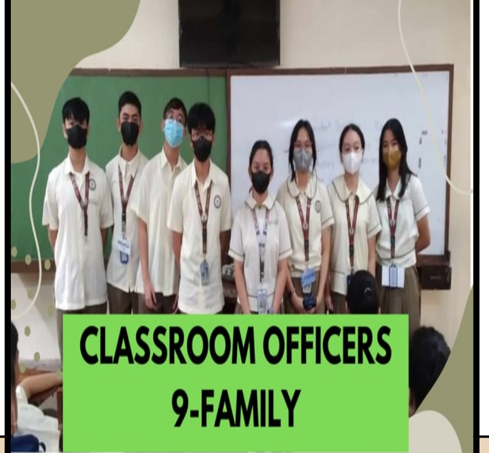
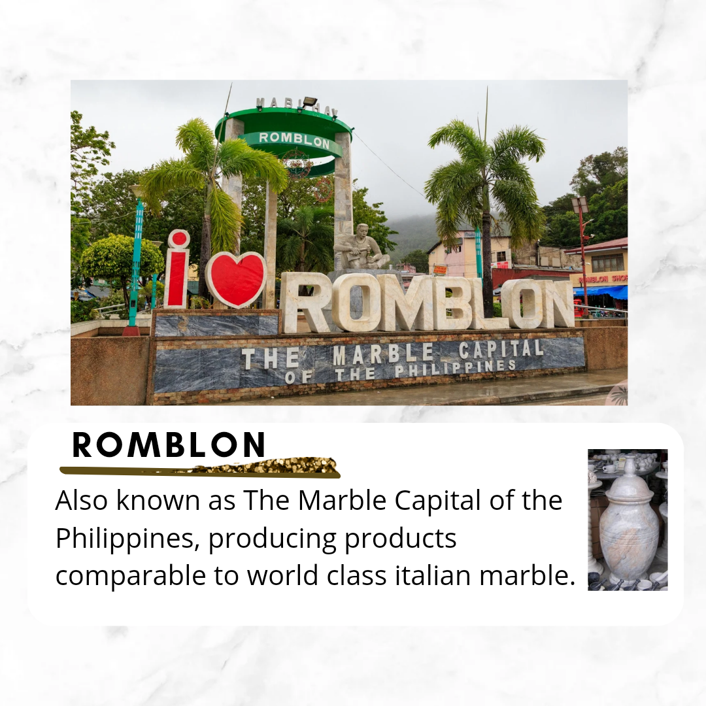
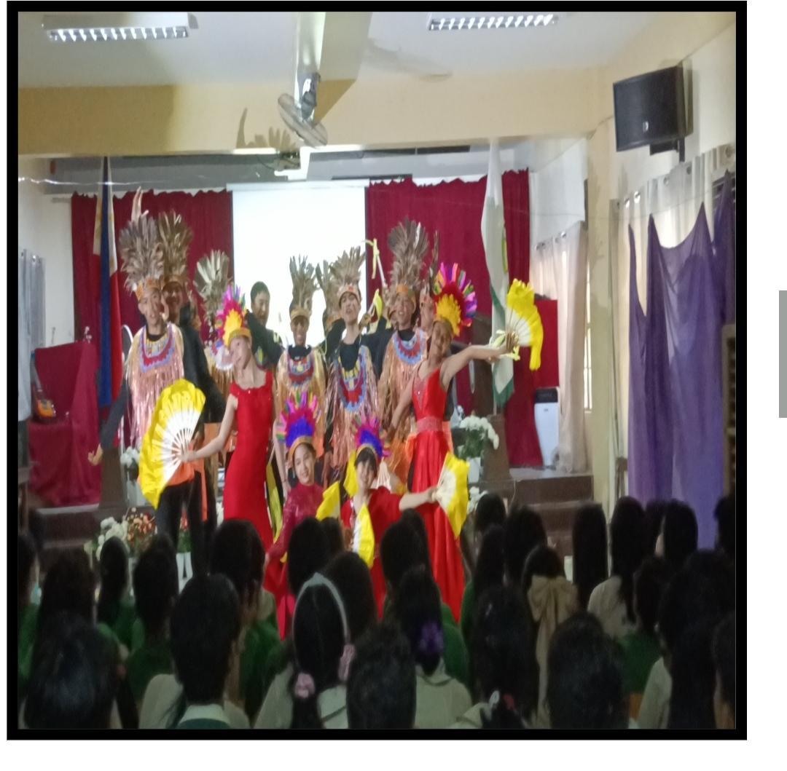
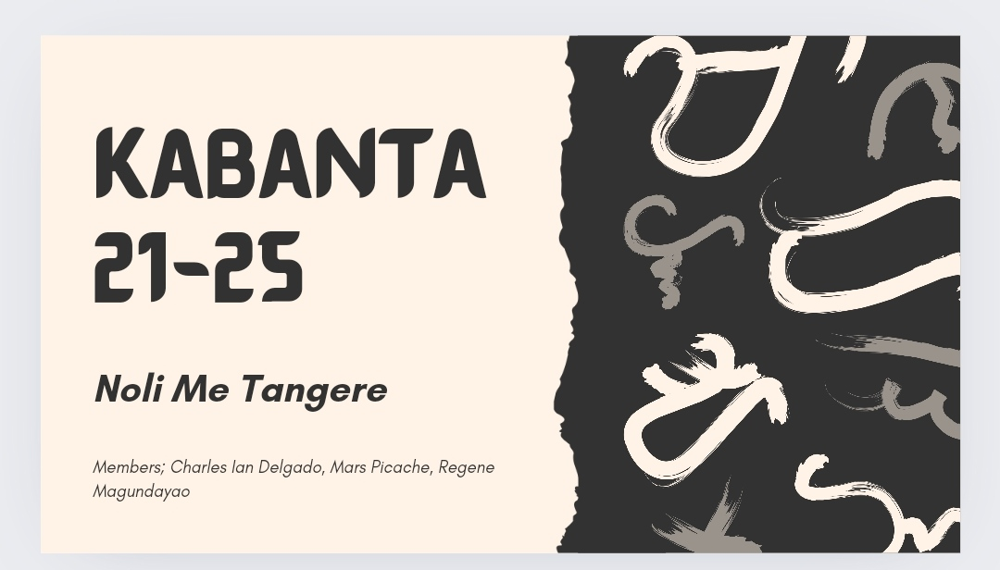

PORTFOLIÓ

Hello, my name is Ian;
Charles Ian Delgado
This is my website about the
activities/assignments that involves ICT.
1ST QUARTER

CLASS OFFICERS
- Monique - President
- Lexi - Vice President
- Audre - Secretary
- Gab - Treasurer
- Julian - Auditor
- James - PIO
- Yllaiza & Paulo - Sergeant and Arms

AP UNESCO
This was a PT in AP where we had to pick a place in the Philippines
and I picked Romblon, the marble capita of thhe Philippines, with canva.
2ND QUARTER
MAPEH CHACHA
Mapeh cha-ch performance task
dance using the steps that sir taught us.
I learned how to dance with Niña

VPOP
3RD QUARTER
VARIETY SHOW
ESP Ptt collaborated with multiple othber subjects

&
4TH QUARTER

FILIPINO NOLI ME TANGERE PRESENTATION
<--ICT PORTFOLIO
(ICT PT, compilation of grade 9)
THE END.
Thank you for reading